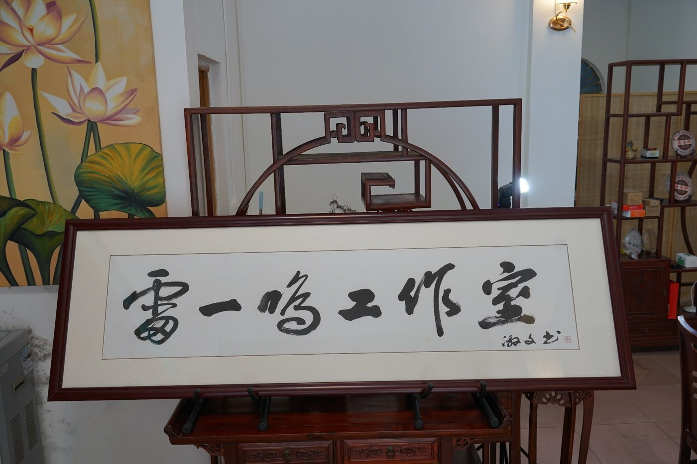

以学生为中心
关注成长需求，尊重个体差异
工作室通过对大学生人生观、价值观、世界观的重新认识和重新构建，以线上与线下相结合的方式，从不同角度了解青年学生的困惑、迷茫以及核心能力的得失；在教书育人、管理育人、服务育人的模式下，帮助学生以更好的状态面对生活、面对自己、面对社会。
与此同时，工作室为改进大学生思想政治教育工作方式方法提供参考，也为辅导员同仁更好地服务学生、教育学生、管理学生、引领学生提供力所能及的帮助。

关注成长需求，尊重个体差异
创新思维与团队沟通
总结经验，反哺育人一线
三个环节共同承担育人责任，让价值塑造伴随学生成长的全过程。
在课堂与分享中启发思考
在日常关照中明确方向
在回应需求中传递温度